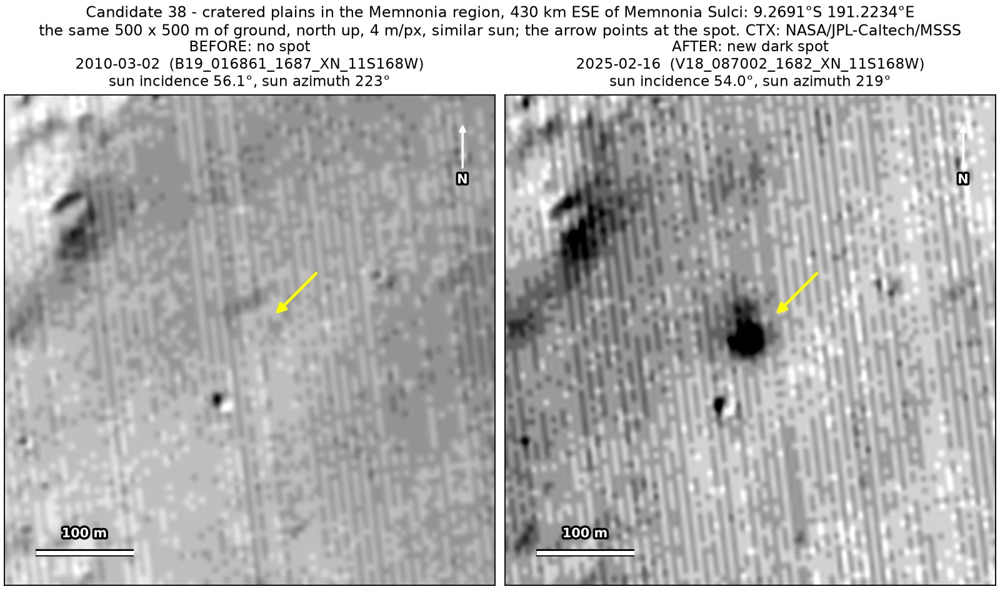
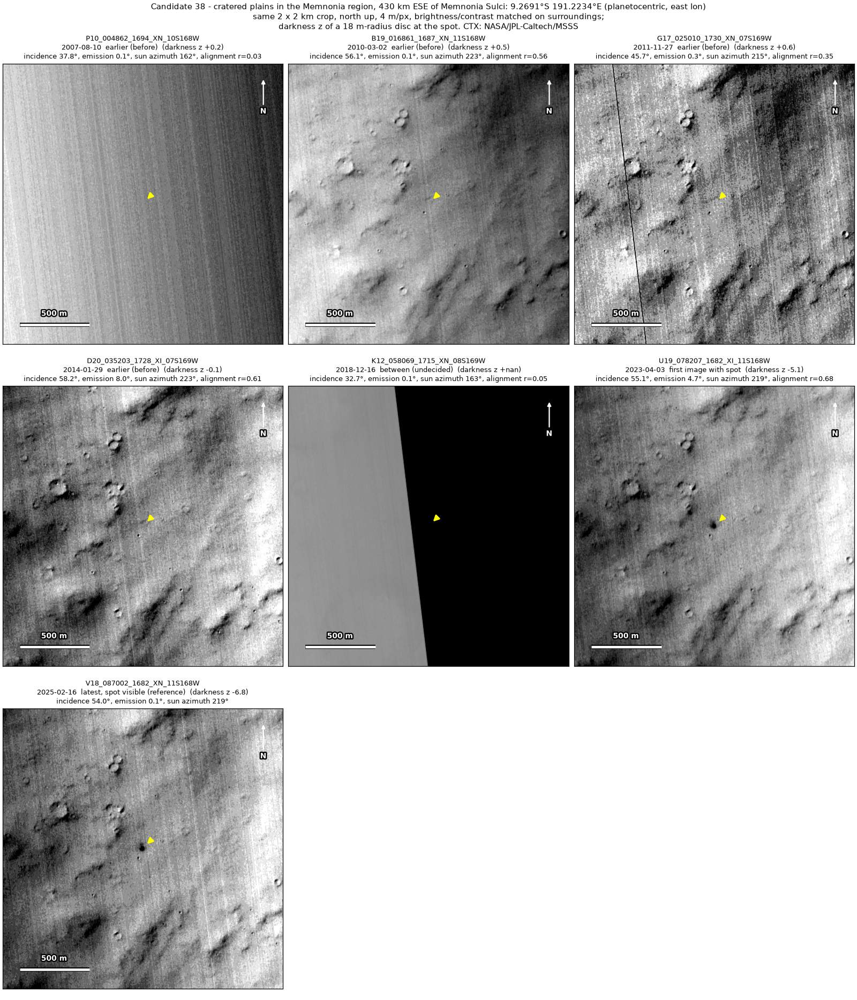
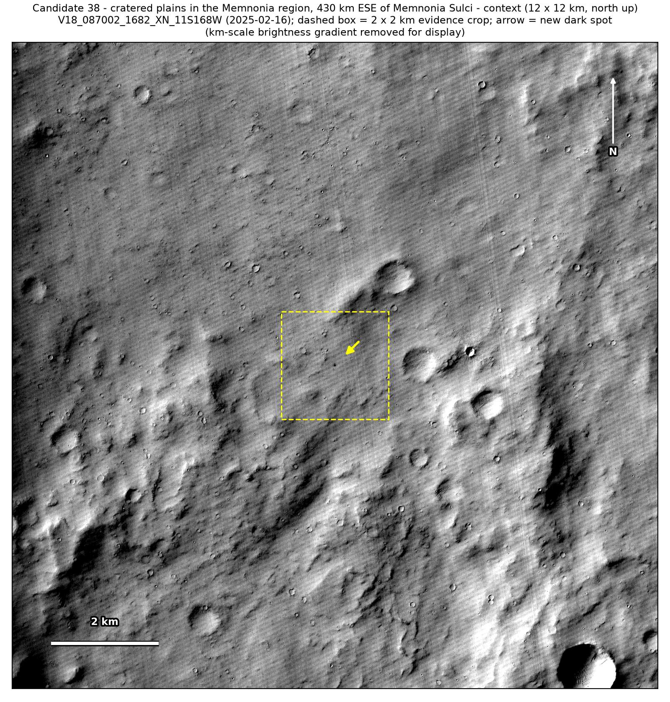
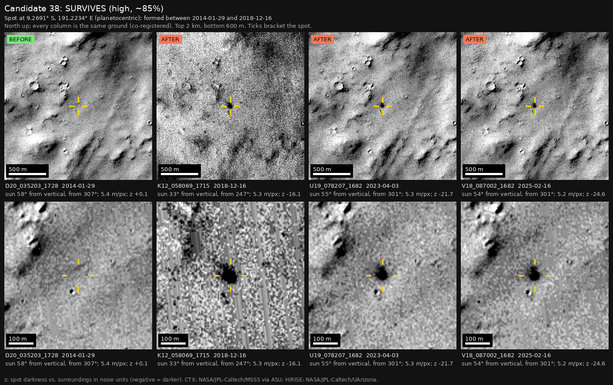

Professor of Mathematics
Paata Ivanisvili
Department of Mathematics, University of California, Irvine

← Possible new impact sites on Mars
Candidate 38: Cratered plains in the Memnonia region, 430 km east-south-east of Memnonia Sulci
Strong · roughly 85%

What changed. A compact dark spot 35 to 40 m across appeared on cratered plains in the Memnonia region between January 2014 and December 2018. It is unchanged in images from April 2023 and February 2025.
Why it may be a new impact. Four earlier images, from 2010 to January 2014, show nothing there, and each of them would have shown it; two of them were taken under the same sun as the images of 2023 and 2025. The spot shows under that sun and under a different one in 2018, so it is not a shadow, and it is seen on three orbits, so it is not a camera glitch. A compact spot on flat plains that stays the same for six years is what the blast zone of a small new crater looks like.
- Location
- 9.269° S, 191.223° E (168.777° W)
- Absent
- 2 March 2010, 27 November 2011, 11 December 2013 and 29 January 2014
- Present
- 16 December 2018, 3 April 2023 and 16 February 2025
- Size
- Compact dark spot 35 to 40 m across
- Confidence
- Strong candidate; roughly 85% that it is a new impact.
- Caveat
- It first shows in a 2018 image, so the camera teams may already have it on their unpublished lists; but it lies outside every footprint of the high-resolution HiRISE camera, and the teams normally photograph a new impact with HiRISE within months of noticing it. Like every candidate here, it is unconfirmed: see the caveat.


